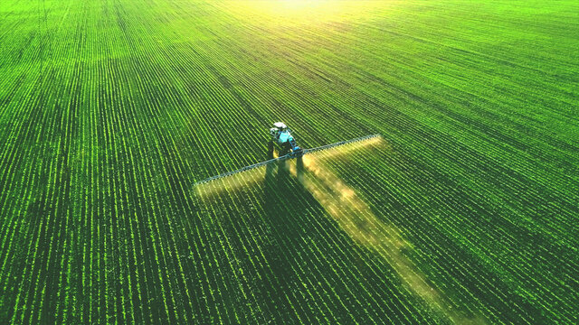
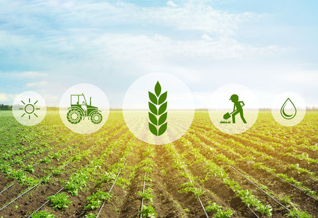
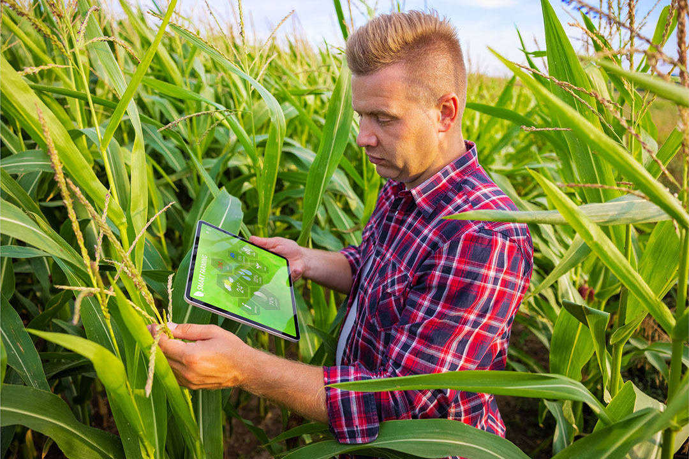
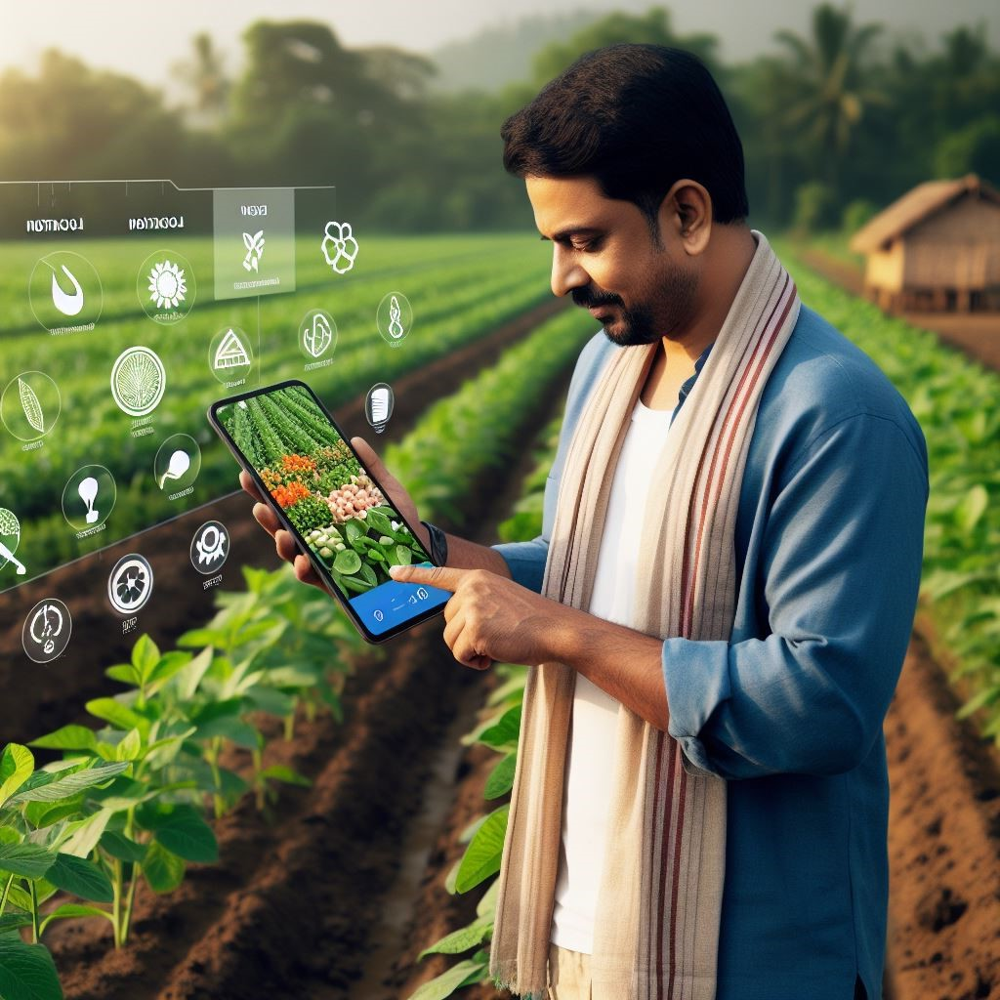

YOUR SMART FARMING ASSISTANT
Smart Crops, Smart Choices with Smart Agriculture!
Smart Crops, Smart Choices with Smart Agriculture!

Smart Agriculture provides farmers with essential tools for smarter farming.It offers personalized crop recommendations based on soil and climate, helps identify plant diseases through image analysis, and provides real-time weather forecasts.The app also includes features for crop planning and guidance, ensuring optimal farming decisions for better yields and healthier crops.
.jpeg)
Get real-time weather updates on temperature, humidity, and more to make better farming decisions with crop predictions.
more infoSmart Agriculture uses data analysis to predict crop suitability, optimizing farming decisions based on soil, weather, and more.
more info

Assist farmers in detecting plant diseases through image uploads, enabling quick and accurate identification for better crop management..
more infoSmart Crop Guide offers expert planting tips, growth tracking, watering reminders, pest control, harvest timing, and fertilizer recommendations.
more info

Smart Crop Tech, Precision Farming, and Customizable Solutions for Sustainable and Efficient Agriculture!
more infoOur app provides an easy interface for farmers to input location and crop, offering detailed suitability and planting schedules.
more info